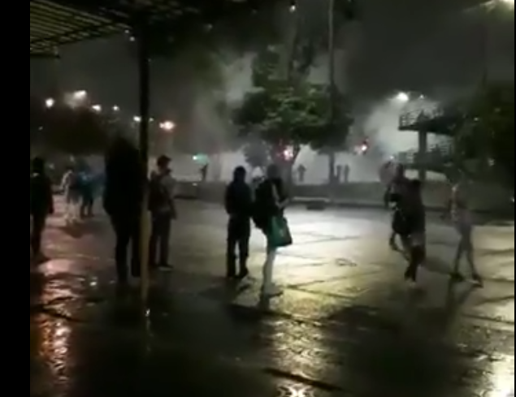

Will Lennon
Writer, Journalist, Researcher
Bio
Will Lennon is a writer and journalist based in Washington D.C. Will moved to the District in 2016, just in time to witness Donald Trump's upset victory in November. Since then, he has graduated with a degree in journalism and mass communication from The School of Media and Public Affairs at The George Washington University. For local and national outlets, he has covered politics, homicides, ICE raids, immigration, campaign finance and more. He has also completed trainings in freedom of information journalism and open source investigations. One of his investigations for Washington City Paper revealed the extent to which local agencies collaborated with ICE. D.C. law was amended to restrict such collaboration as a result of the investigation. On January 6, 2021, he covered the pro-Trump riots from the lawn of the U.S. Capitol. Currently, Will attends the University of Maryland's School of Public Policy as a graduate student focused on international security and economic policy.
As of November 4, 2023, Will's short novel Skip Tracer is on sale wherever ebooks are sold. Paperbacks are available from Black Hare Press via Amazon. Skip Tracer is a tech-noir inspired by Ian Fleming, Raymond Chandler, and Philip K. Dick. It's about a digital researcher who specializes in finding people who want to stay missing.
Clips
Current Projects

Military and security applications for Artificial Intelligence Vladmir Putin believes that whoever is first to master militarized Artificial Intelligence will become "ruler of the world". We can't know for sure how AI will shape geopolitics in the coming decades, but that won't stop governments and corporations from doing all they can to be first across the finish line. The United States and China are considered frontrunners, but revolving door politics and lobbying in the U.S. might allow other parties to pull ahead. Although AI does have promising applications (the United Nations uses it to investigate child abuse) it also poses threats to privacy and human rights. I wrote for Shadowproof about how an AI-based surveillance system developed by Anduril industries could increase mortality rates among migrants at the southern U.S. border. The interactive map below illustrates the web of corporate and government interests I uncovered in my investigation. Going forward, I'm interested in writing about tech companies developing AI systems for authoritarian and undemocratic governments. If you have any tips or ideas, please do not hesitate to get in touch. (Web powered by LittleSis. Image credit: Anduril Industries)
Past Projects
Geolocating police violence in Colombia, 2021 A protest movement erupted across Colombia's major cities in the spring of 2021, after then-President Iván Duque introduced a series fiscal reforms. The police crackdown was swift and severe, sparking a cycle of violence that continued even after the proposed reforms were withdrawn. At least 28 people were killed. There were reports of a secretive riot police unit known as ESMAD being involved in the suppression of the demonstrations. That summer, I worked part time as a volunteer researcher for Bellingcat, a group of investigators using open source intelligence (OSINT) to investigate spies, governments and criminal networks. While volunteering for Bellingcat, I used geolocation to pinpoint instances of police violence against protestors in Colombia. The incidents I geolocated were incorporated into the Geografia de Violencia Policial (Cartography of Police Violence) project.

Tracking homicides in Washington D.C., 2018 In 2018, I participated in an unpaid summer internship at D.C. Witness . At D.C. Witness, I reported on homicides in the District of Columbia and covered a trial in which three men were found guilty of felony murder. I also worked on a project tracking where people convicted of homicide in the District were being incarcerated. My bylines have since been removed from the site. In many cases, my name has been replaced with "D.C. Witness Staff," in spite of the fact that I only ever worked for D.C. Witness as an intern. Using the Wayback Machine, one can still see some (but not all) of the stories I wrote for the site with my byline properly attached. (See links below.) I also have extensive notes proving that I was present at dozens of hearings and trials (pictured left) and copies of weekly "progress report" forms I was required to fill out throughout the internship. The progress reports show what I was working on and when. I have also written a Twitter thread about this. Archived links to D.C. Witness bylines Prosecution Seeks Delay in Hopes of Cracking iPhone Passcode Valdez Continues to Claim Innocence During Sentencing Judge Denies Convicted Murderer's Release Jury Finds Defendant Guilty Scheduling conflict may delay murder trial